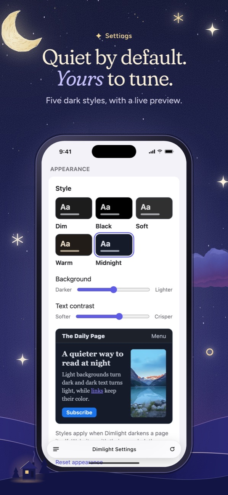
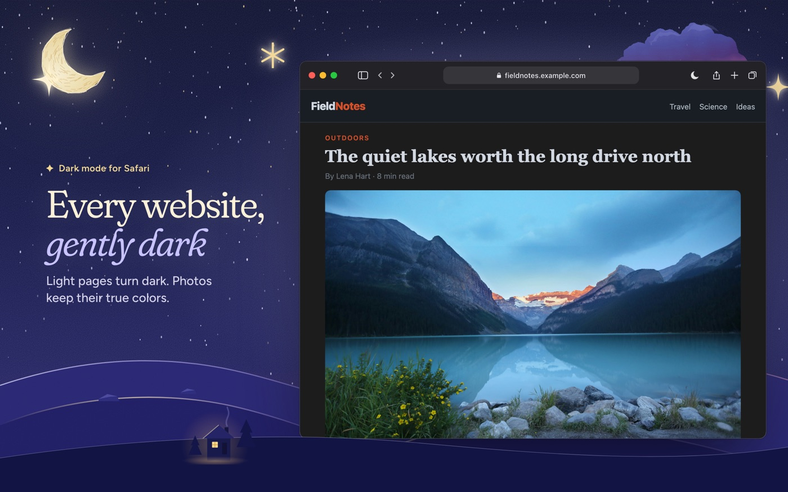
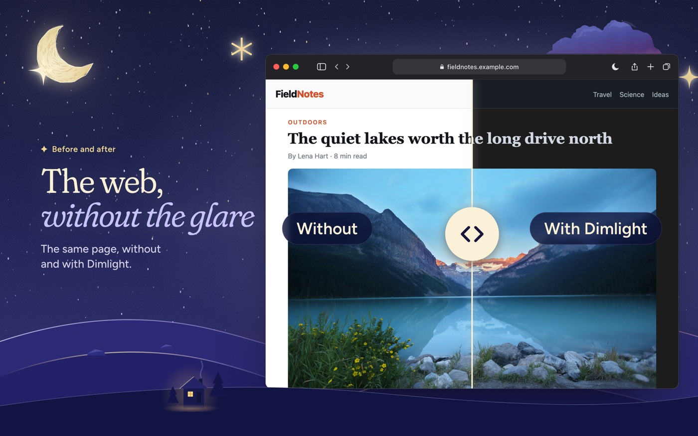

Download the press kit (ZIP, 18 MB) Icon and 18 screenshots for iPhone, iPad and Mac.
Fact sheet
- Name
- Dimlight: Dark Mode for Safari
- Developer
- Mohamed Moghazi, an independent developer
- Platforms
- iPhone and iPad (iOS 17 or later), Mac (macOS 14 or later). One download covers all three.
- Price
- Free. No subscription, no in-app purchases, no ads.
- Privacy
- “Data Not Collected” on the App Store. No account, no analytics, no servers.
- Current version
- 1.3
- App Store
- apps.apple.com/app/id6831634388
- Website
- m-moghazi.github.io/dimlight
What makes it different
- The website’s own dark theme comes first. Many websites already have a dark design that only shows when the device is in Dark Mode. Dimlight switches it on at any time, so the page looks the way its designers intended.
- Photos keep their true colors. When a website has no dark theme, Dimlight recolors backgrounds, text and borders. It never puts a filter over the whole page, so photos, video and logos are untouched.
- No white flash. Dimlight remembers how it handled each website and paints a dark background before the page appears.
- Yours to tune, for free. Five styles (Dim, Black for OLED screens, Soft, Warm and Midnight), background and text contrast sliders, per-site choices, and an option to follow the device’s Dark Mode.
- Private by design. Everything happens on the device. Dimlight never sends anything about the websites you visit.
Descriptions
25 words
Dimlight brings dark mode to every website in Safari on iPhone, iPad and Mac. It uses each site’s own dark theme first. Free and private.
100 words
Dimlight is a free Safari extension that makes every website dark on iPhone, iPad and Mac. When a website has its own dark theme, Dimlight turns it on, even while the device is in Light Mode. When it doesn’t, Dimlight darkens the page itself: light backgrounds turn dark and dark text turns light, while photos, videos and logos keep their true colors. Websites that are already dark are left alone. People can pick from five styles, adjust contrast, and choose Auto, Always dark or Off for each website. Dimlight works entirely on the device and collects no data.
Screenshots





Full-resolution screenshots for every device are in the press kit. Lake photo: Roberto Nickson / Unsplash.
Video
A 20-second promo, free to embed or reuse in coverage of Dimlight:
Contact
For interviews, questions or early builds, open an issue at github.com/M-Moghazi/dimlight/issues and mention that you’re writing about Dimlight.